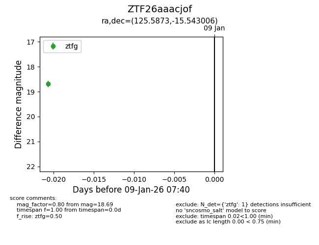
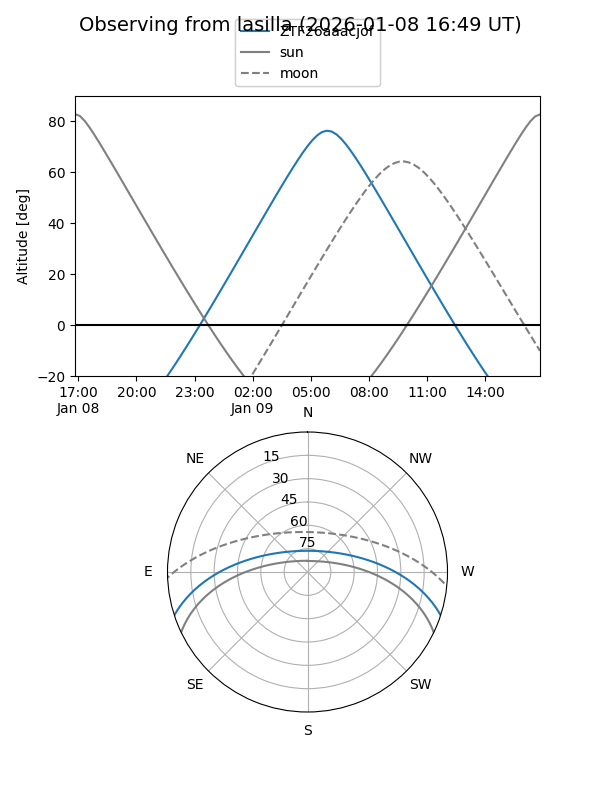
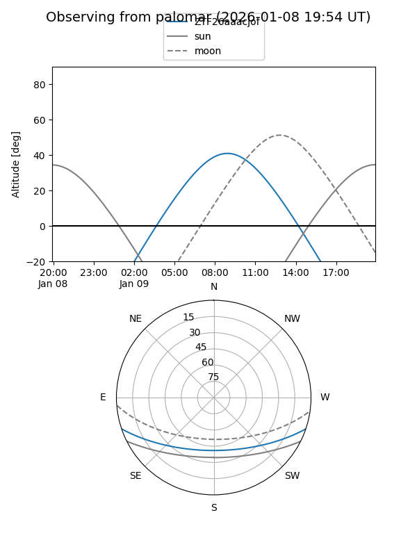

ZTF26aaacjof
Target ZTF26aaacjof at 2026-01-09 07:41
Aliases and brokers:
FINK:
Lasair:
ALeRCE:
alt names
ZTF26aaacjof (ztf,fink_ztf)
Coordinates:
equatorial (ra, dec) = 125.5873,-15.54301
equatorial (HMS+DMS) = 08:22:20.96,-15:32:34.82
galactic (l, b) = (237.6049,+12.06904)
Flags:
Photometry:
last ztfg=18.69
1 ztfg detections
Lightcurve

Visibility


Additional plots